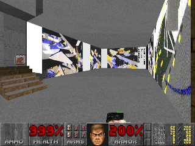
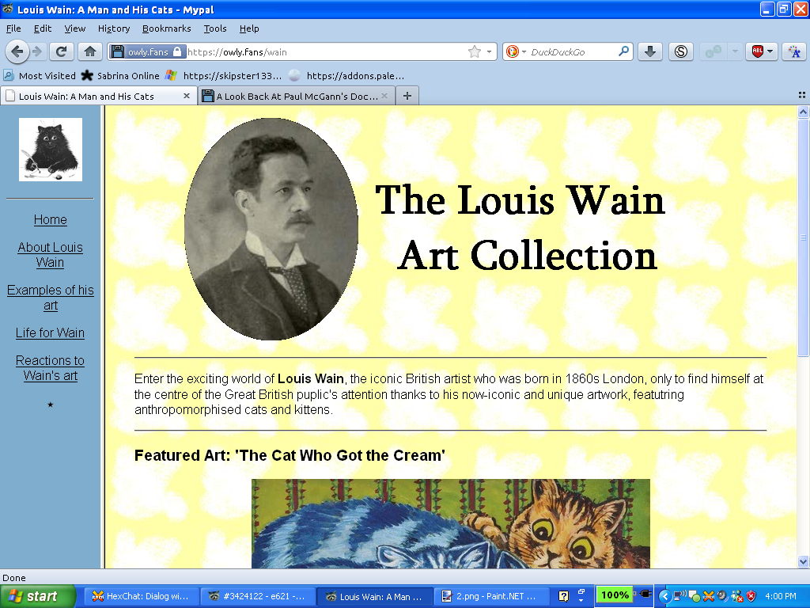
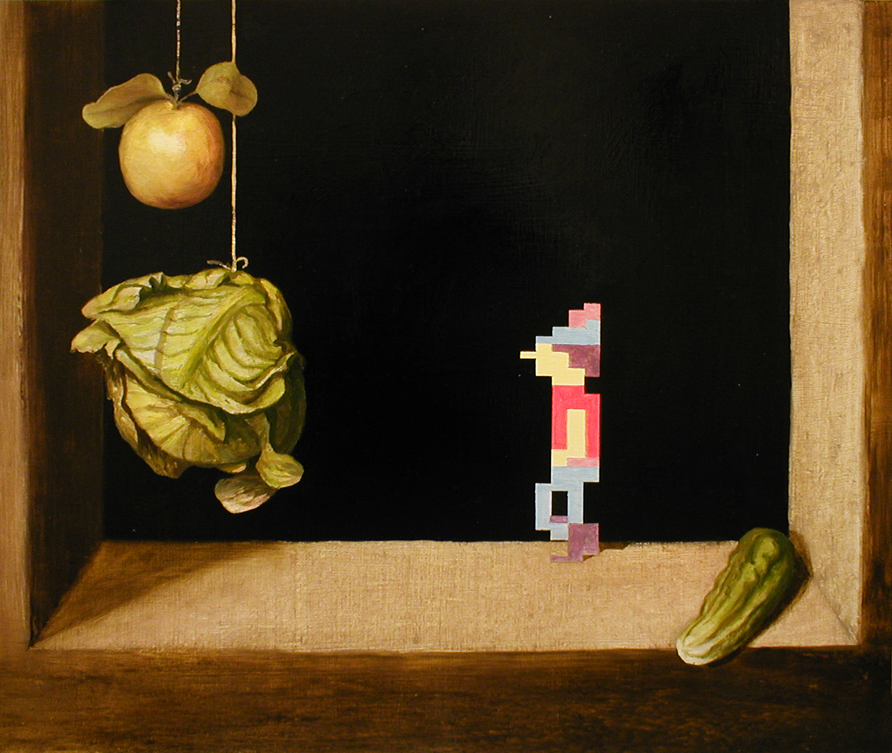
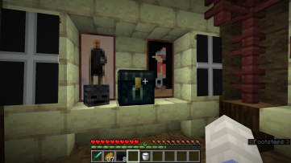

<!DOCTYPE html>
<html>
<title>Ars Doom | Doom: Rediscovering History</title>
	<meta charset="utf-8">
	<meta content="OWLY.FANS" property="og:title" />
	<meta content="Because Sometimes Doom is just bad" property="og:description" />
	<meta property="og:image" content="https://owly.fans/floppy.png">
	<meta content="#9B4F96" data-react-helmet="true" name="theme-color" />
    <meta name="keywords" content="owly, cass python, neocities, neozones, brit, uk, archive, site ran by a stud, england, wales">
	<link rel="shortcut icon" type="image/x-icon" href="../../../favicon.ico">
    <link rel="stylesheet" href="../../style.css">
    </html>
	    <body><p><a href="../">Back to index</a></p>
		<h1>Ars Doom</h1>
			<hr>
			<p></p>
			<em>Cass &#xAB;Owly&#xBB; Python, 2024-02-18. Published 2024-03-24.</em>
			
	<p><figure>
        <center></center><p>Coming out in 1995, only one year after Doom II, this WAD uses works from over 20 artists in this experimental mod, as produced by Orhan Kipcak.</p>
		</figcaption>
		</figure></p>

<p>I'm not really sure if this is all that much of a thing now, but I still remember being involved in the whole nothingburger of a «can computer games be art?» debate during the good old days of the 2010s. My main question to people who think that games cannot be art simply boils down to «why the hell not?». I feel like this is why I respect 1995's <em>Ars Doom</em> so much, a mod for Doom II that was first shown at Ars Electronica Festival in Linz that same year, something that, while not perfect, I still feel like was a pioneer in digital artwork.</p>

<p>The Ars Doom (Arse Doom??) level itself puts the player in a virtual museum that is jampacked full of artwork by the likes of <a href="https://en.wikipedia.org/wiki/Peter_Weibel">Peter Weibel</a>, <a href="https://en.wikipedia.org/wiki/Seiichi_Furuya">Seiichi Furuya</a>, and loads of other names that I am too stupid to know as they aren't on Twitter - sorry! Yeah, I straight up don't know any of the artists whose work helped make this WAD, but to be fair, I doubt that any of the people who were involved with the making of Ars Doom would have any idea of who my favorite artists on Fur Affinity are, so I think we're about equal. The number of people cited in the <yell>readme</yell> for this WAD is very impressive and shows me that this was a large group effort, something that I feel like you have to admire from the get-go.</p>

<p>From the very beginning, you are flung into this mod - the music, for yours truly at least, was the first thing that I noticed when spawning into the level. The MIDI is a jazz number by <a href="https://en.wikipedia.org/wiki/Curd_Duca">Curd Duca</a>. I kind of don't want to sound mean, but I don't really care all that much for this track, and in fact, I think it kind of stinks. I might only be saying that as I'm not the <em>biggest</em> fan of jazz, but Duca's work here kind of bugs me.</p>

<p><figure>
        <center><audio controls src="ars.ogg" alt="An extract song from Ars Doom that is very jazzy sounding." title="An extract song from Ars Doom that is very jazzy sounding.">
</audio></center>
			<figcaption><p>An extract of what the music from Ars Doom sounds like, as composed by Austrian musician, Curd Duca.</p>
		</figcaption>
			</figure></p>

<p>Is the jazz piece the wrong track to use in Ars Doom... umm, maybe? I've been to a few museums and art galleries in my time (loved when I went to <a href="https://en.wikipedia.org/wiki/Tate_Liverpool">Tate Liverpool</a>) and I don't recall there being any music playing while I was there. I would say that if there was to be music, it should be classical, but my mind instantly goes to <a href="https://doomwiki.org/wiki/The_Unholy_Trinity"><em>The Unholy Trinity</em></a>, a WAD that while I love, has a painful rendition of <em><a href="https://en.wikipedia.org/wiki/Toccata_and_Fugue_in_D_minor,_BWV_565">Toccata and Fugue in D Minor</a></em>, so maybe something slower would have been better? I don't know, but the works of Daniel «C418» Rosenfeld do come to mind as something that would fit the whole <span aria-hidden="true">~</span>vibe<span aria-hidden="true">~</span> of an art gallery (although he would have only been five when this was made, so maybe a little too young to be making music ).</p>

<p>One area that I find particularly weird in the map is what I can only dub as «<yell>the ant room</yell>» which is a smallish place that has a GIF, well, a <em>wall texture</em>, showing a bird's eye view of ants behind a white background marching back and forth. Another room that I can easily recall is a room that features art by <a href="http://norbertpfaffenbichler.com">Norbert Pfaffenbichler</a> that has an interactive element to it, where if you shoot at the art, then (what I think is) paint splatter will appear on the canvas. I think this is a unique idea when it comes to presenting works of art, although by the standards of today, it does seem a little... well, outdated is the main word that comes to mind, but it's not all that shocking that something made during the 1990s is a little primitive now. There are quite a few interactive elements to this WAD, mostly revolving around you shooting something and it will change in some way. The  Norbert Pfaffenbichler room is just one example. There are others, like in the red carpet hallway that you enter after leaving the first room, if you shoot the black and white photos, they will turn upside down.</p>

	<p><figure>
        <center><a href="wain.png"></a></center>
		<figcaption><p>Thanks to the growth and wide availability of the World Wide Web, anyone can host their art online in their own virtual museum, such as seen here with this mockup. In 1995, when Ars Doom was made, the Web itself was only four years old and many people were unable to post their artwork on the Internet easily.</p>
		</figcaption>
		</figure></p>

<p>I feel like a person's enjoyment of this WAD kind of boils down to what kind of art they like. If you enjoy post-modern, sure, this could be an interesting play, but if you're not the biggest simp for all of that new wave art then what this mod has to show off, from the weird monster replacements, the music, and the sound effects might <em>really</em> put someone off. For me, it's a bit of a mixed bag, as I said, I like the creative use of the Doom engine, but there are also some parts that I just do not care for, like the World War II-looking photos just outside of the first room that you can shoot and turn upside down.</p>

<p>I would love to see a contemporary game made today that's of a virtual museum - I know there are some equivalents like the <a href="https://www.moddb.com/mods/national-videogame-museum/news/national-videogame-museum-wad-officially-released">National Videogame Museum WAD (2020)</a>, but I feel like this relies too heavily on the combat side of Doom. <a href="https://en.wikipedia.org/wiki/The_Uncensored_Library"><em>The Uncensored Library</em></a> is another example of a museum that is virtual, although as the name suggests, it is mostly book-focussed... well, it <em>is</em> a library to be fair... There are also other examples like Ringo Starr's shameless NFT Web3 hellworld stupid <a href="/nft/">NFT</a> MetaVerse <em>other buzzwords</em> <a href="https://guitar.com/news/music-news/sneak-peek-ringo-starr-art-gallery-nft-metaverse">art gallery</a>, but that always seemed shameless and just doesn't match the pure joy of being able to shoot at and destroy art, like in <em>Ars Doom</em>.</p>

<p>All these years later, well, in 2009, the head of the project, Orhan Kipcak, <a href="https://www.gamescenes.org/2009/11/interview-orphan-kipcak-arsdoom-arsdoom-ii-1995.html">took part in an interview</a>, chatting about the WAD. He talks about inviting people to submit their works to him, and I quote, &#xAB;For the virtual exhibition, I invited several artists to produce virtual art pieces which could be displayed within the game level. Furthermore I let my students of the University of Applied Arts in Vienna design a whole room in the virtual Brucknerhaus. Every artist was told that their art pieces would be shown only to be destroyed. I'm happy to report that all of them agreed&#xBB; - the <a href="https://www.gamescenes.org/2009/11/interview-orphan-kipcak-arsdoom-arsdoom-ii-1995.html">whole thing is a good read</a>, and it's interesting hearing about how people reacted to it at the time, with it being &#xAB;extreme in both ways, good and bad&#xBB;.</p>

	<p><figure>
        <center><a href="graham_zetterstrand.png"></a></center>
		<figcaption><p>Kristoffer Zetterstrand - Graham (2003)</p>
		<p>The works of Kristoffer Zetterstrand might be almost as recanisable as the games they were featured in: Minecraft.</p>
		<p>Zetterstrand's art takes deep infuance from video games that he played in his youth such as Donkey Kong, Counter-Strike, and seen here with King's Quest I.</p>
		</figcaption>
		</figure></p>

<p>Of course, it's easy for me to smugly sit back in my chair all the way in <script type="text/javascript">
var today = new Date()
var year = today.getFullYear()
document.write(year)
</script>, but yeah, at the time this would have been rather hated by some, in the interview, Orhan Kipcak even quotes that someone called it a «fascist orgy of violence». Quite line to call this work, but still, at the time, Doom, Mortal Kombat, and video games as a whole to a certain extent, were seen by some, like <a href="https://en.wikipedia.org/wiki/1993–94_United_States_Senate_hearings_on_video_games">members of the United States' Senate</a>, as nothing more than a pointless exercise in virtual violence, the idea that computer games could be <em>more</em> than killing monsters on a screen must have not crossed the minds of some, and that certainly is a shame, to say the least, that people will limit themselves to what can and cannot be artwork.</p>

<p><em>Ars Doom</em> is now almost 30 years old at this point and the video game industry has since moved on from simple games like the original Doom and Doom II to multi-billion dollar games like Epic's <em>Fortnite</em> that has gotten the backing of the likes of Lego, Family Guy, and movie stars like Neanu Reeves, but that's not to say that computers and video games <em>are no longer</em> used to make art, oh no. Instantly, games like <em>Minecraft</em> come to mind when it comes to art and games going hand-in-hand.</p>

<p>In Minecraft, the most successful game of all time when it comes to games sold, you are able to not only make anything that you put your mind to, but it is also possible to make artwork using <a href="https://minecraft.wiki/w/Map">in-game maps</a> by placing blocks onto the floor and slowly filling it up to make it look like something artistic. Let's also not forget people like <a href="https://en.wikipedia.org/wiki/Kristoffer_Zetterstrand">Kristoffer Zetterstrand</a>, whose art has been immortalized forever in the game when he was asked by the then-lead developer, <a href="https://minecraft.wiki/w/Markus_Persson">Markus &#xAB;Notch&#xBB; Persson</a> to implement a number of artworks into the game.</p>

	<p><figure>
        <center></center>
		<figcaption><p>Minecraft in-game screenshot showing a player looking at two placed paintings made by Kristoffer Zetterstrand.</p>
		</figcaption>
		</figure></p>

<p>Game modding, of course, also opens up a whole new world for art, without it, Ars Doom would not have been able to walk so that Minecraft could run.</p>

<p>Today, this simple Doom mod has largely been forgotten in favour of more advanced Doom mods, but despite this, <em>Ars Doom</em> from 1995 still stands out as a rather charming experimental game that is worth a play, if not to admire <yell><strong>the ant room</strong></yell>.


<p>Downloads</p>
	<ul>
	<li><a href="https://www.doomworld.com/idgames/themes/x-rated/i_am_old_enough_to_look_at_this/ars_sml">Ars Doom on the /idgames archive</a> (<a href="ars_sml.zip">local copy</a>)</li>
	<li><a href="https://www.doomworld.com/idgames/themes/x-rated/i_am_old_enough_to_look_at_this/ars_r">Ars Doom (repackaged edition) on the /idgames archive</a> (<a href="ars_r.zip">local copy</a>)</li>
	<li><a href="https://owlman.neocities.org/library/dtr/ars_r.html">Ars Doom: Can Computer Games Be Art?</a> - Old review of mine from 2018, not all that good, but worth a look</li>
</ul>  

<p></p>
	<hr>
<p>Graham (2003) was <a href="https://commons.wikimedia.org/wiki/File:Graham._Painting_by_Kristoffer_Zetterstrand.jpg">taken from Wikimedia Commons</a> and is <a href="https://creativecommons.org/licenses/by-sa/3.0/deed.en">CC BY-SA 3.0</a>, I found a higher resalution version on <a href="https://twitter.com/Zetterstrand/status/1636481246573260800">Zetterstrand's Twitter</a> (<a href="https://nitter.privacydev.net/Zetterstrand/status/1636481246573260800">mirror</a>).</p>

<p><strong>Want to support OwlyFans? <a href="/nft/">See our NFTs</a>!</strong>
</p>

	
	<p>Copyright 2024 - <script type="text/javascript">
var today = new Date()
var year = today.getFullYear()
document.write(year)
</script> by Cass &#xAB;Owly&#xBB; Python, licensed under the <a href="../../../license/fopl-mdp-v2" title="The Freedom Owl Public License: Modifications, Distributions, and Private Use Version 2" alt="The Freedom Owl Public License: Modifications, Distributions, and Private Use Version 2">FOPL-MDP V.2</a>. Please see <a href="../../../humans.html">humans.html</a> for full credit and thanks. Peace and love.</p>
<p><font color="black"><center>&#x2605;</center></font></p>
<p>
<div style="text-align:right">
<a href="http://bytemoth.nfshost.com/cd5k-net/tau">&tau;</a>
</p>
</div>
<p></p>
	<script src="../../../ruffle/ruffle.js"></script>
<script src="../../../script.js"></script>
    </body>
</html>

